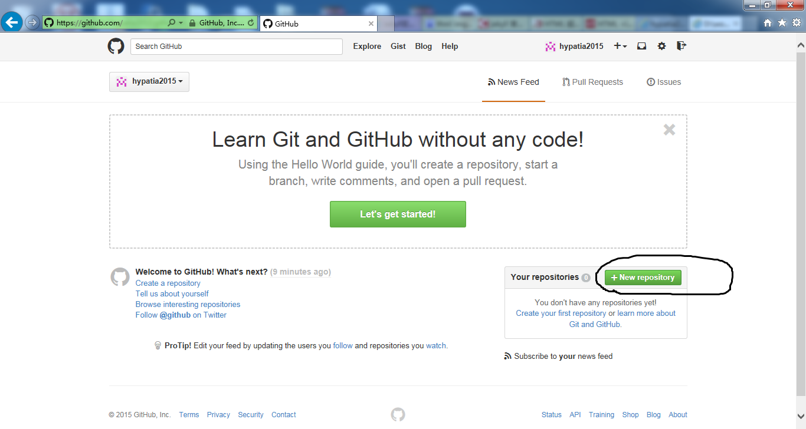
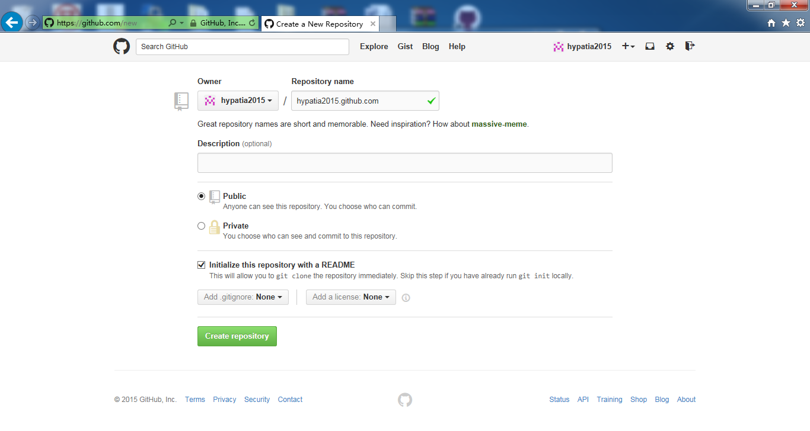

一步一步搭建：我的博客http://hypatia2012.github.com
第一步创建github帐号
网站：https://github.com/
PS:假设你的用户名称是"usrname",而我的用户名称是"hypatia2012"
第二步创建一个仓库
使用您的账号登录以后；跳转到https://github.com主页，如图：

点击New repository 按钮

点击创建。
PS：仓库第一个名称与用户名称相同。
第三步：下载该资源库。到本地。
git clone https://github.com/hypatia2015/hypatia2015.github.com
Cloning into 'hypatia2015.github.com'...
remote: Counting objects: 3, done.
remote: Total 3 (delta 0), reused 0 (delta 0)
Unpacking objects: 100% (3/3), done.
Checking connectivity... done.
第四步：写一个测试index.html文件；内容如下
------
谢谢阅读！
------